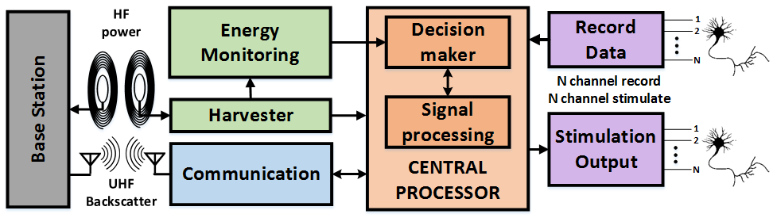

Vaishnavi Ranganathan
Principal Researcher
Microsoft Research, Redmond
Affiliate Asst. Professor
University of Washington, Seattle
About Me
I started my research career as a little snowflake on top of a mountain that started rolling down. Now I feel like an avalanche that just kept collecting more snow (and a decent bit of debris) along the way 😊.
I call myself a Sensing Systems Researcher, and I keep this intentionally vague owing to the wild trajectory that my research has taken me in in the past decade! Thanks to a very tolerant advisor, managers, colleagues and mentors I got to work with (and sometime lead) impactful and fun projects that I am passionate about (My research section below should give you an idea). I have so far tried to use my experience building Sensing Systems and technology to address global challenges in healthcare, agriculture and sustainability. In the era of AI, I am now on a journey to explore exciting opportunities that I can apply my learnings to. For the past year (starting end of 2024), I have been innovating with my co-conspirators at the intersection of secure AI devices, multi-modal sensing and AI personalization.
Stay tuned for more updates!
Recent Updates
- The Microsoft Undergraduate Research Internship (URI) program for 2025 has been announced. I'd highly recommend it for undergraduate students with a drive for research. I have been an URI mentor for the past three years and can confirm that it is a uniquely rewarding experience for the interns and the mentors alike. For more information refer to the URI program website
- Summer internship posting open for Networking Research Group at MSR. Apply here and email me if you work on low-power wireless communication and sensing applications and are interested in a summer internship - November 2022
- Co-chaired the first workshop on Agri Food Systems (AgSys) as a part of SenSys ‘22. The workshop was a success thanks to exciting submissions, keynote speakers (Digital Green and Strella Biotech) and, panelists - November 2022
- Appointed as Affiliate Asst. Professor at ECE, UW - July 2022
- Check out our submission “Re-Inventing the Food Supply Chain with IoT: A Data-Driven Solution to Reduce Food Loss”, at IEEE IoT Magazine. The article speaks about our research efforts in addressing challenges in the global food supply chain - March 2022
Research at Microsoft
Nov 2024 - current
Oct 2020 - Dec 2024
Feb 2019 - Sept 2022
June 2016 - current
Academic Background
Graduate: PhD. in Electrical & Computer Engineering, Sensor Systems Lab, University of Washington, Seattle
Aug 2013 - July 2018
I graduated with a Ph.D. from the Sensor Systems Lab at the University of Washington, Seattle, WA. The primary focus was applying my research on low-power, wireless, sensing and communication systems towards building a Brain-Computer-Spinal Interface, a closed-loop neural implant prototype that was the first of its kind to assist in spinal-cord-injury rehabilitation.

Aug 2013 - Jul 2018
Aug 2011 - Jul 2013
Undergraduate: B.Tech in Electronics and Instrumentation Engineering/Amrita School of Engineering, India
Aug 2007 - July 2011
I received my B.Tech in Electronics and Instrumentation Engineering from Amrita School of Engineering, Coimbatore, India and was a Visiting Researcher at the Indian Institute of Technology (IIT), Bombay during my senior year in B.Tech. As an undergraduate I gained experience in robotics, MEMS and was a member of SAE India.
Wireless & Brain-Computer-Spinal Interface
Sept 2013 - Dec 2018
Research Focus: Brain-Computer-Spinal Interface (BCSI)
My PhD research focussed on a closed loop neural interface for rehabilitation and reanimation of paralyzed limbs in patients with spinal cord injury. The BCSI system development provides a system level block diagram and functional illustration along with the devices that I developed. The system is designed to stimulate in the spinal cord based on intentions decoded from neural signals recorded in the brain and close the break in communication created by a spinal cord injury.
Key Innovations:
- Wireless Power Transfer: Integrated wireless power transfer at HF (13.56MHz) for power delivery to implants
- Ultra-low Power Communication: Optimized UHF (915MHz) Backscatter communication for low-power implants
- Closed-loop Neural Recording and Stimulation: Real-time FPGA algorithms built on approximate computing for neural signal processing
- NeuralCLIP Prototype: Demonstrates stimulation triggered by on-device decoding of action intent from Local Field Potentials (LFP) recorded in the motor cortex
Technical Achievements:
To accommodate for variation in power available from a wireless power transfer link, the closed-loop system is built on novel approximate computation blocks on a FPGA. I was awarded a graduate innovation fellowship from the Washington Research Foundation to support this work on the implantable neural interface device.
Award: Washington Research Foundation Fellowship 2017: Innovation Graduate Fellowship in Neuroengineering
NeuralCLIP Prototype
The modular neural interface device NeuralCLIP which was developed as a part of this project was awarded the Madrona prize runner up in 2018.
Award: Madrona Prize 2018 - Implantable Wireless Brain-Computer Interface
Apart from this core research, I worked on other projects including energy harvesting from RF and NFC for wearable sensors, analog backscatter, wireless power transfer using phased array systems and low-overhead echolocation for localizing receivers in a HF phased array power transfer system. I also developed an FPGA implementation of the RFID EPC Gen2 protocol for performing block read and write with an Impinj R1000 RFID reader.
Publications: Dissertation Document | Brain-Computer-Spinal-Interface | NeuralCLIP Paper | More Publications: Google Scholar